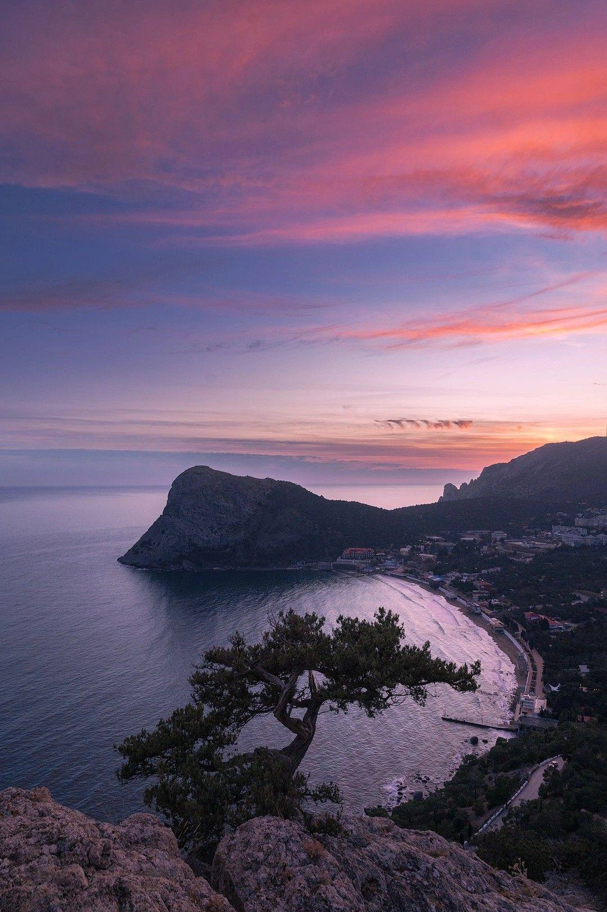
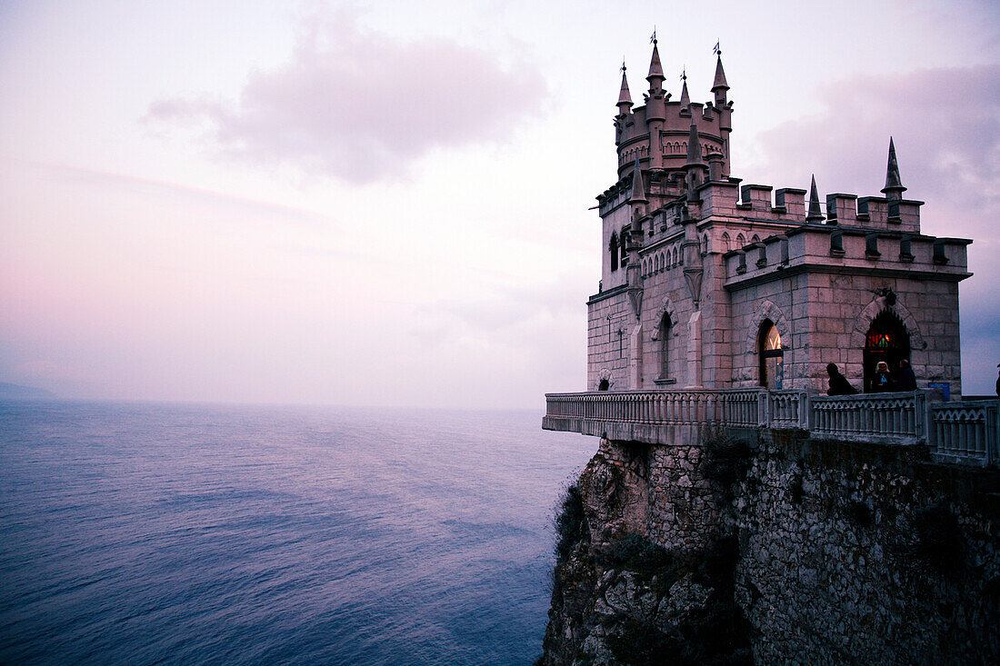
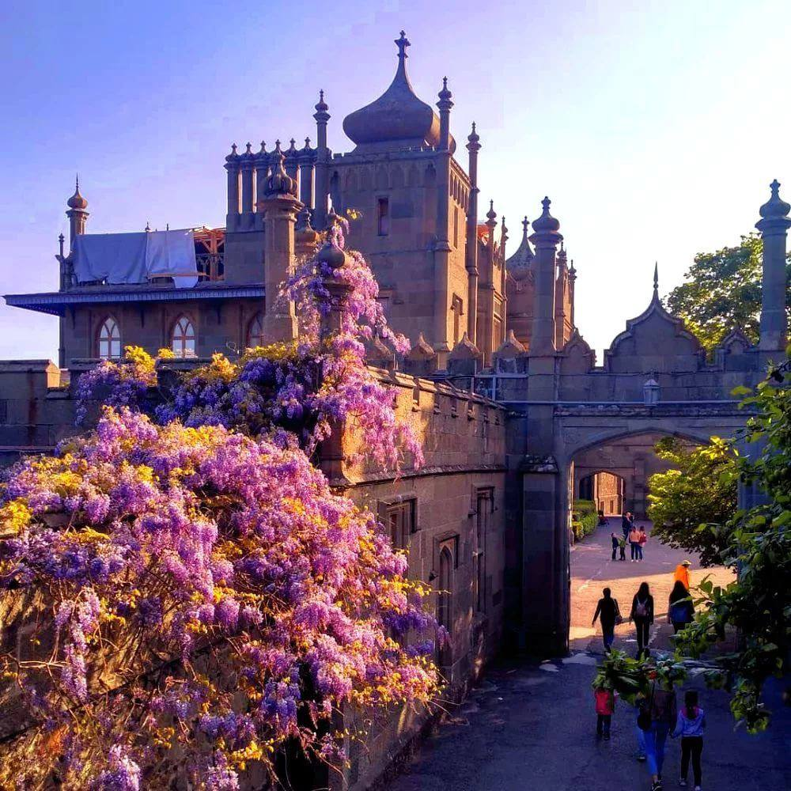
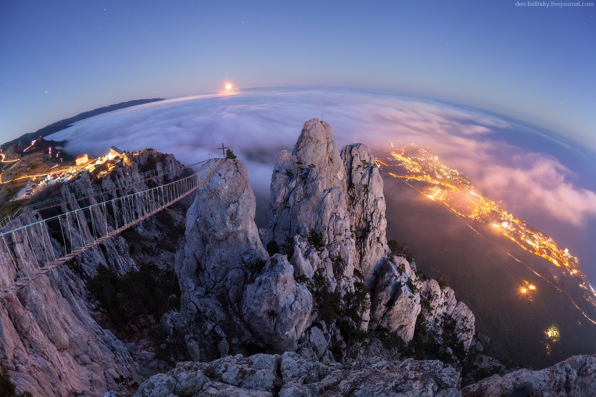
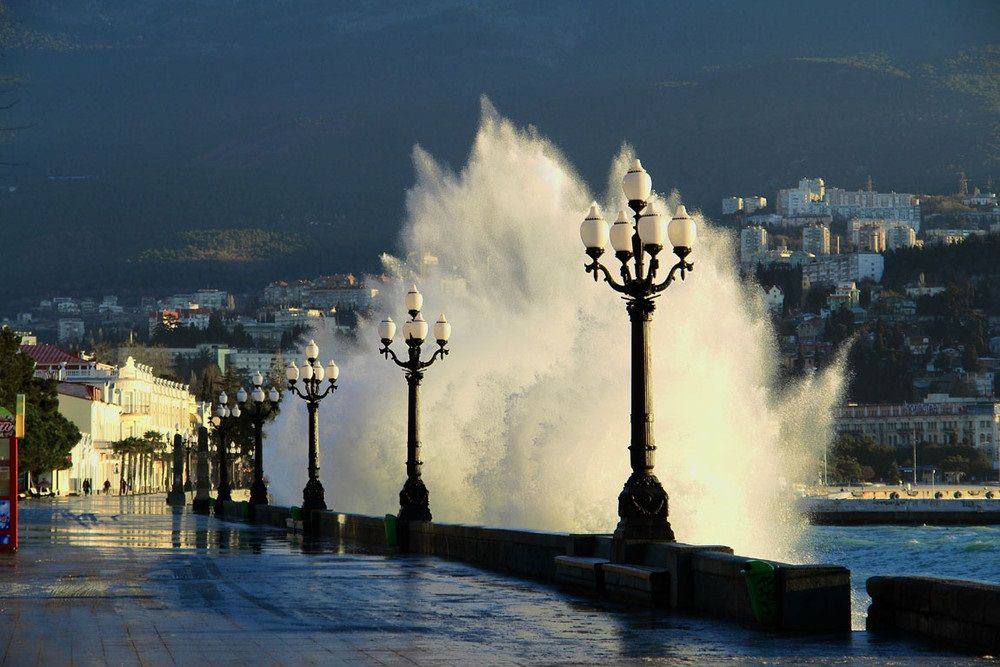
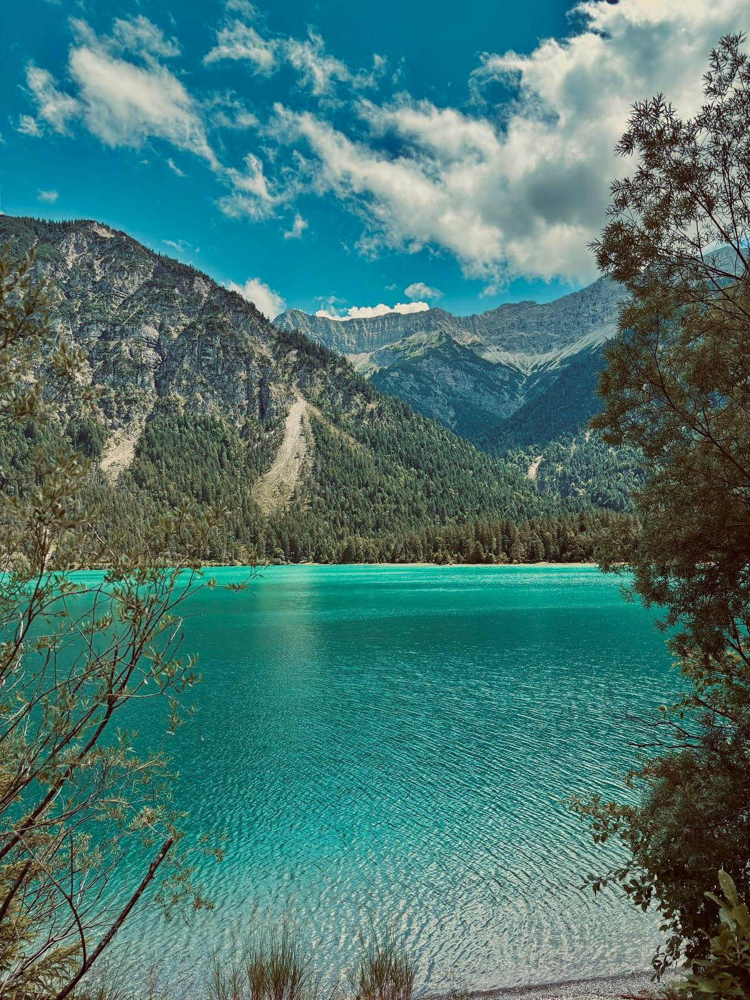
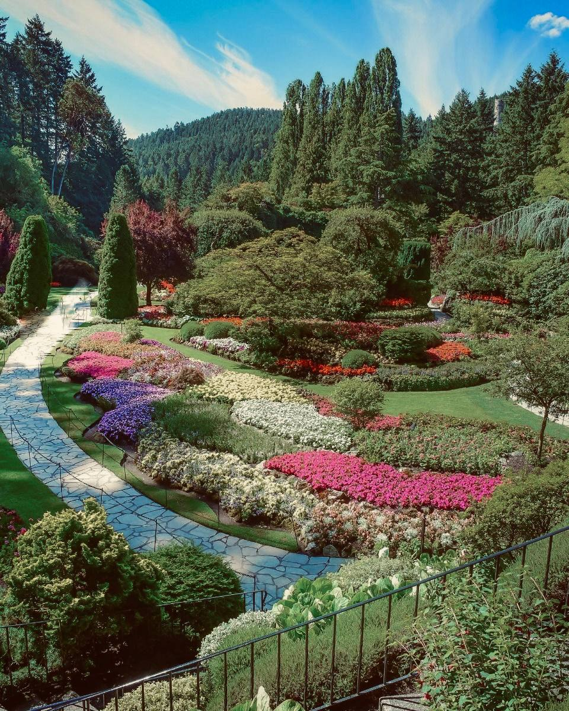
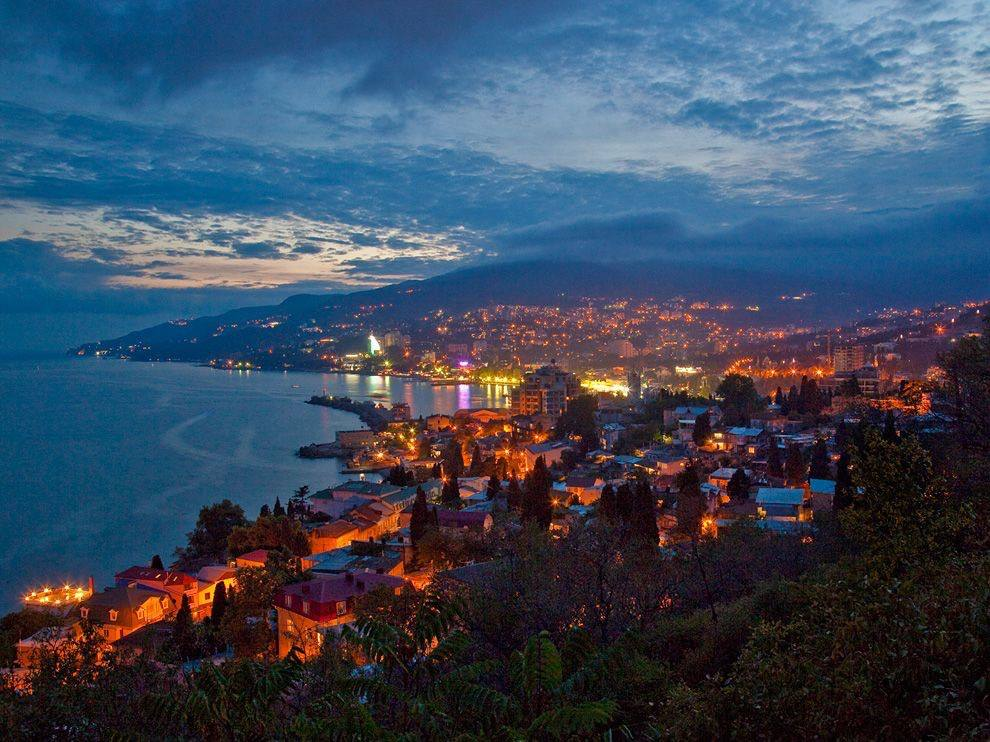

Sehenswürdigkeiten in Jalta
Jalta ist eine Stadt an der Südküste der Krim, eingebettet zwischen dem tiefblauen Schwarzen Meer und den majestätischen Bergen. Die Stadt verzaubert mit ihrem milden Klima, den palmengesäumten Uferpromenaden und einer Atmosphäre südlicher Leichtigkeit.
Historische Villen, duftende Parks und atemberaubende Aussichtspunkte machen Jalta zu einem Ort, an dem Natur und Kultur auf einzigartige Weise zusammenfließen.
Besonders berühmt ist Jalta für seine einzigartigen Sehenswürdigkeiten, die Besucher aus aller Welt anziehen. Der imposante Schwalbennest-Felsen, der hoch über dem Meer thront, wirkt wie ein Märchenschloss und bietet einen der eindrucksvollsten Ausblicke entlang der gesamten Küste.
Auch der Liwadija-Palast, einst Sommerresidenz des russischen Adels, beeindruckt mit seiner eleganten Architektur und den weitläufigen Gärten.
Entlang der Küstenstraße entdecken Reisende ruhige Strände, versteckte Buchten und charmante Orte, die das besondere Flair dieser Region ausmachen.
Jalta bleibt ein Ort, an dem jede Begegnung mit der Natur und der Geschichte unvergessliche Eindrücke hinterlässt.
Schwalbennest
Gleich einem Märchenschloss thront das Schloss Schwalbennest auf einer 40 Meter über dem Meer stehenden Klippe. Es gilt als eines der bekanntesten Postkartenmotive der gesamten Krim und zieht mit seiner dramatischen Lage Besucher magisch an.
Das Innere des Schlosses ist reich mit dunklen Holzpaneelen, kunstvollen Stuckarbeiten und feinen Details gestaltet, die an die Eleganz vergangener Zeiten erinnern.
Von der schmalen Galerie aus öffnet sich ein atemberaubender Blick auf das Schwarze Meer, dessen Wellen tief unter den Felsen brechen und ein Gefühl grenzenloser Freiheit vermitteln.
Heute dient das Schloss nicht nur als architektonisches Wahrzeichen, sondern auch als kultureller Treffpunkt: Hier finden Ausstellungen, kleine Veranstaltungen und thematische Führungen statt, die den historischen Charakter des Ortes noch lebendiger machen.
Mehr Informationen über das Schwalbennest hierWoronzow-Palast
Ein Palast, der in der ersten Hälfte des 19. Jahrhunderts in Alupka erbaut wurde. Der Palast des Fürsten Woronzow und der weitläufige Park entstanden zwischen 1828 und 1848 unter der Leitung des Architekten Edward Blore, der auch an der Erweiterung des Buckingham Palace mitwirkte.
Das Gebäude präsentiert sich in einem faszinierenden eklektischen Stil: Die Nordfassade ist von neugotischen Formen geprägt, während die Südfassade mit Elementen indischer und maurischer Architektur überrascht. Für den Bau wurde lokaler Diabas verwendet, dessen dunkle Farbe dem Ensemble eine besondere Ausdruckskraft verleiht.
Der umgebende Park, entworfen und gepflegt vom deutschen Gärtner Karl Kebach, zählt zu den schönsten Landschaftsparks der Region. Mit seinen geschwungenen Wegen, alten Bäumen, Wasserbecken und Aussichtsplätzen bildet er eine harmonische Verbindung von Natur und Architektur.
Dieses einzigartige Ensemble gilt heute als eine der bedeutendsten Sehenswürdigkeiten der Krim und zieht jährlich Tausende Besucher an. Nach der Oktoberrevolution wurde der Palast verstaatlicht, doch sein historischer und kultureller Wert blieb erhalten.
Mehr Informationen über den Woronzow-Palast hierAi-Petri
Ai-Petri ist ein markanter Berg des Krimgebirges in der Nähe von Jalta, benannt nach dem Heiligen Petrus. Mit seinen schroffen Felszacken und der charakteristischen Silhouette zählt er zu den bekanntesten Wahrzeichen der Region.
Besucher erreichen den Gipfel entweder über eine spektakuläre Seilbahn oder über eine kurvenreiche Serpentinenstraße, die sich durch die dichten Wälder und felsigen Höhen schlängelt. Oben angekommen eröffnet sich ein Panorama, das seinesgleichen sucht: Weite Blicke über das Schwarze Meer, die Küstenlinie von Jalta und die mächtigen Gebirgszüge im Hinterland.
Die besondere Kombination aus frischer Bergluft, dramatischen Felsenformationen und unberührter Natur macht Ai-Petri zu einem unvergesslichen Erlebnis für Wanderer, Fotografen und Naturliebhaber.
Im Winter verwandelt sich das Plateau oft in eine schneebedeckte Landschaft, während im Sommer die Felsen in der warmen Sonne glühen und Ausblicke bis zum Horizont möglich sind.
Die „Konferenz von Jalta“ hingegen wird häufig fälschlich mit dem Berg in Verbindung gebracht. Tatsächlich bezieht sich dieser Begriff auf historische Ereignisse des Jahres 1945, die eng mit den alliierten Treffen der Kriegsmächte – einschließlich der Potsdamer Konferenz – verknüpft sind. Sie haben jedoch keinen direkten Bezug zum Berg selbst.
Mehr Informationen über Ai-Petri hierDie Promenade von Jalta
Die Promenade in Jalta, auch Nabereschnaja Leniná genannt, ist eine der bekanntesten Sehenswürdigkeiten der Stadt an der Südküste der Krim. Sie liegt direkt am Schwarzen Meer und ist ein beliebter Treffpunkt für Einheimische und Touristen.
Entlang der Promenade reihen sich Palmen, gemütliche Cafés, elegante Restaurants, kleine Boutiquen und Straßenkünstler aneinander, was ihr ein lebendiges, südliches Flair verleiht. Von hier aus öffnet sich ein wunderbarer Blick auf den Hafen, die ruhige Wasserfläche und die umliegenden Berge, die wie ein natürlicher Rahmen die Stadt umgeben.
Besonders abends entfaltet die Promenade ihren Zauber: Die Lichter spiegeln sich im Meer, Musik erklingt aus den Bars, und zahlreiche Spaziergänger genießen die milde Meeresbrise. Die Atmosphäre wirkt gleichzeitig entspannt und mondän – ein idealer Ort, um die Stimmung Jaltas in all ihrer Vielfalt zu erleben.
Ob für einen gemütlichen Spaziergang, ein Abendessen mit Blick aufs Wasser oder einfach zum Beobachten des lebhaften Treibens: Die Promenade ist ein Herzstück der Stadt und ein Muss für jeden Besucher.
Mehr Informationen über die Promenade von Jalta hierDer Liwadija-Palast

Etwas außerhalb von Jalta liegt der Liwadija-Palast, die ehemalige Sommerresidenz der russischen Zarenfamilie Romanow. Das elegante weiße Gebäude im italienischen Stil wurde Anfang des 20. Jahrhunderts errichtet und besticht durch seine harmonische Architektur und die großzügige Anlage.
Berühmt wurde der Palast vor allem durch die Konferenz von Jalta im Jahr 1945, bei der Roosevelt, Churchill und Stalin über die Neuordnung Europas nach dem Zweiten Weltkrieg verhandelten. Heute ist der Palast ein Museum, das die prächtige Innenausstattung und das historische Erbe der Zarenzeit eindrucksvoll präsentiert.
Die umliegenden, weitläufigen Gärten laden zu Spaziergängen ein: gepflegte Alleen, farbenfrohe Blumenbeete und alte Bäume schaffen eine ruhige und harmonische Atmosphäre. Besucher können hier nicht nur die Geschichte des Palastes erleben, sondern auch die Aussicht auf die Küste und das Schwarze Meer genießen, wodurch ein Besuch des Liwadija-Palastes zu einem unvergesslichen Erlebnis wird.
Mehr Informationen über den Liwadija-Palast hierDer Jaltiner Türkissee
Der Jaltiner Türkissee liegt verborgen inmitten der Berge und beeindruckt mit seinem klaren, schimmernden Wasser. Die Oberfläche des Sees leuchtet in intensiven Blau- und Grüntönen, die je nach Sonnenlicht ständig wechseln und eine fast magische Atmosphäre schaffen.
Rundherum umgeben ihn duftende Wälder, stille Pfade und kleine Lichtungen, die eine besondere Ruhe und Abgeschiedenheit ausstrahlen. Besucher können hier wandern, die Natur beobachten oder einfach am Ufer verweilen und den Blick auf das glitzernde Wasser genießen.
Dieser idyllische Ort wirkt wie ein kleines Naturwunder, das jeden Besucher sofort in seinen Bann zieht. Besonders in den Morgenstunden, wenn der Nebel über dem See liegt und das Licht sanft auf das Wasser fällt, entsteht eine fast märchenhafte Stimmung.
Der Jaltiner Türkissee ist nicht nur ein Ort der Erholung, sondern auch ein perfektes Ziel für Naturliebhaber und Fotografen, die die Schönheit der Krim in all ihren Facetten erleben möchten.
Mehr Informationen über den Jaltiner Türkissee hierDer Nikitski Botanische Garten
Der Nikitski-Botanische Garten gehört zu den ältesten botanischen Gärten Europas und wurde bereits im Jahr 1812 gegründet. Auf einer weitläufigen Fläche werden hier tausende Pflanzenarten aus aller Welt gepflegt: von majestätischen Palmen über exotische Kakteen und duftende Rosen bis hin zu seltenen Bäumen und farbenfrohen Blumen.
Besonders im Frühling verwandelt sich der Garten in ein wahres Blütenparadies, das Besucher mit seinen intensiven Farben und Düften verzaubert. Neben der Pflanzenvielfalt bieten zahlreiche Wege, Treppen und Aussichtspunkte herrliche Blicke auf das Schwarze Meer und die umliegenden Berge.
Spaziergänge durch die gepflegten Alleen, ruhige Ruheplätze und versteckte Ecken laden dazu ein, die Natur in aller Ruhe zu genießen. Der Nikitski-Botanische Garten ist nicht nur ein Ort für Pflanzenliebhaber, sondern auch ein kulturelles und landschaftliches Highlight der Krim, das Geschichte, Natur und Erholung auf besondere Weise verbindet.
Mehr Informationen über den Nikitski Botanischen Garten hierDie Aussicht von Jalta
Jalta vereint auf einzigartige Weise Natur, Geschichte und Kultur. Von den majestätischen Gipfeln des Ai-Petri über die idyllischen Ufer des Türkissees bis hin zu prächtigen Palästen wie Lividia und Woronzow bietet die Stadt eine faszinierende Vielfalt für jeden Besucher.
Historische Gebäude, weitläufige Gärten, die lebendige Promenade und beeindruckende Aussichtspunkte machen Jalta zu einem Ort, an dem sich Erholung, Abenteuer und kulturelle Entdeckungen perfekt verbinden.
Wer die Krim besucht, sollte diese malerische Stadt mit ihrem unvergleichlichen Flair unbedingt erleben.